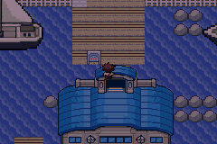
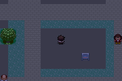
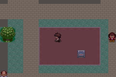
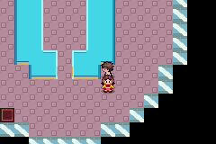

All images are unmodified native240x160 emulator captures. B4 overall FAILED a separate Ecruteak intended-facing audit; these visible improvements and scoped functional passes are not final delivery acceptance or a B5 claim.
Methods and limitations · All B4 native screenshots and movement recordings
QA09 flat gray court → B4 soil and light curb. Same western court viewpoint33,43. This is canonically open ground, not a missing building.


QA09 south-facing exterior → B4 north-facing city entry and dry pier. Camera/approach changed with the corrected facade; this is not an exact pixel-difference pair. B4 Joe is fully visible on the actual north landing.

B3 used outer-glass motifs inside the enclosure; B4 distinguishes the cyan inner optical housing. Same lower-room context. The chosen flat U projection remains an explicit adaptation.

